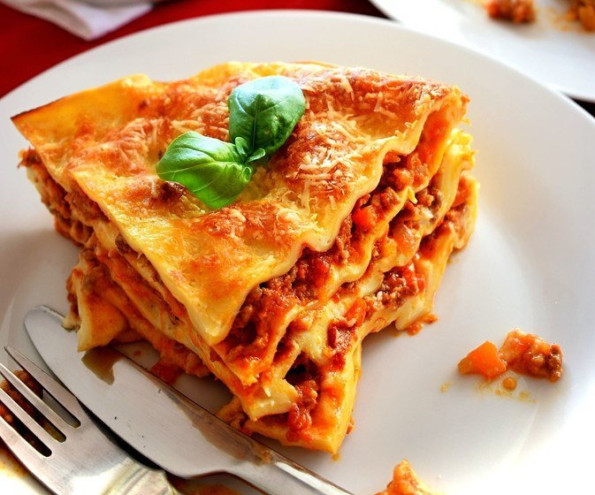

Lasagna recipe

Lasagna (US: /ləˈzɑːnjə/, also UK: /ləˈzænjə/,[1] Italian: [laˈzaɲɲa] also known as lasagne, Italian: [laˈzaɲɲe]) is a type of pasta, possibly one of the oldest types,[2] made of very wide, flat sheets.
- Meat
- Onion and garlic
- Tomato products
- sugar
- spices and seasonings
- lasagna noodles
- Cheeses
- Egg
- Make the meat sauce
- Cook the noodles
- Make the ricotta mixture
- Layer the lasagna according to the recipe instructions
- Cover with foil and bake
- let the lasagna rest before serving